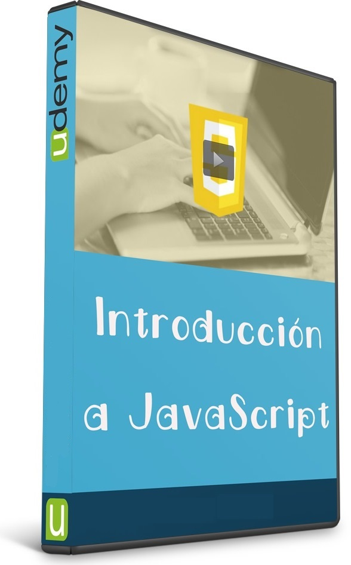
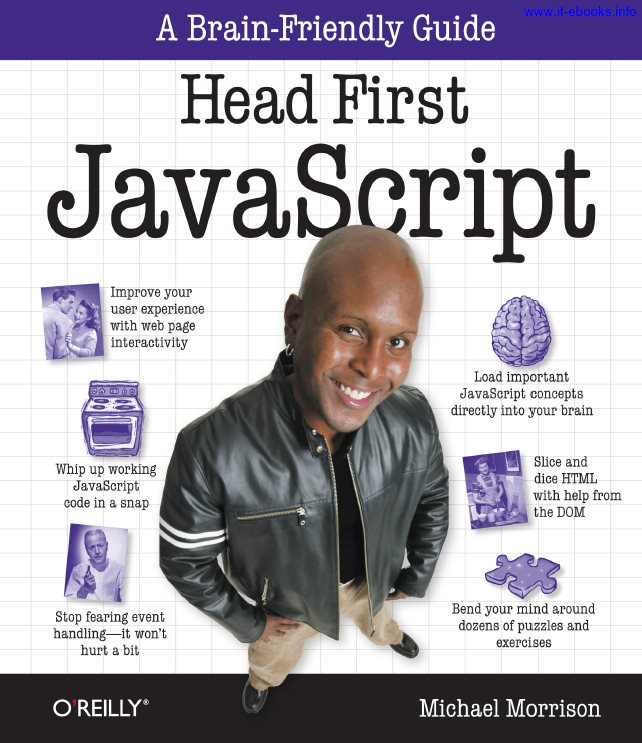
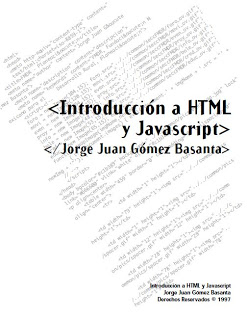
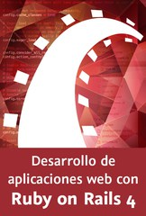

LECTURAS SOBRE JAVA & RUBY


Un curso introductorio desde 0 para quienes desean aprender o comprender mejor JavaScript.
Este curso incluye resúmenes, ejercicios constantes y workshops para que el alumno domine los conceptos básicos del lenguaje.
Los conocimientos aprendidos en este curso, son indispensables para comprender mejor otros cursos y temas complejos de javascript tales como Jquery, AngularJS, NodeJS, Sencha, PhoneGap o las nuevas API’s de HTML5.
Link de Descarga: http://www.freelibros.org/diseno-web/udemy-introduccion-a-javascript.html

¿Quieres dar el salto de la creación de páginas web HTML y CSS y crear aplicaciones web dinámicas? ¿Quieres tener tus habilidades web al siguiente nivel? Parece que usted está listo para aprender más caliente lenguaje de programación de la web: JavaScript. Head First JavaScript es su boleto para ir más allá de copiar y pegar el código en el sitio web de un tercero, y escribir sus propias páginas web interactivas.
Link de Descarga: http://www.freelibros.org/programacion/head-first-javascript-a-learners-companion-to-javascript.html

El lenguaje HTML (Hyper Text Markup Language) es un formato muy simple para crear documentos de hipertexto que pueden ser visualizados en múltiples plataformas (Macintosh, PC, Unix). Así al dar cierto formato a la información, nos aseguramos de que cualquier usuario de una computadora personal pueda verla, incluyendo elementos como imágenes, audio, video, e incluso programas completos.HTML fue creado en 1990 y es la base del World Wide Web (WWW), la parte gráfica de Internet. Antes de ese año, en Internet sólo se podían transmitir textos y programas a través de servicios como FTP y Gopher, lo que limitaba su uso a círculos científicos de diversas universidades a nivel mundial.
Link de Descarga: http://www.freelibros.org/diseno-web/introduccion-a-html-y-javascript.html

La comunidad de Ruby ha crecido en gran medida por el framework de desarrollo web más ágil y famoso que existe en el mercado, Rails. Comúnmente se le conoce como Ruby on Rails y es su facilidad para crear aplicaciones web lo que ha llevado a un nuevo paradigma en el desarrollo de aplicaciones web. En este curso vas a conocer cómo se utiliza Ruby on Rails en la creación de soluciones profesionales.
Hablaremos de cómo es la arquitectura de una aplicación típica de Rails y cómo se configura. Utilizaremos las rutas para poder acceder a otras secciones de nuestra aplicación. Crearemos controladores y acciones para poder mostrar el resultado de nuestra vista en HTML o JSON o XML. Guardaremos el resultado de nuestras operaciones en nuestra base de datos con active record y revisaremos cómo utilizar los trabajos en cadena junto con el envío de correos.
Conocerás los ambientes de las aplicaciones y cómo llevar esta aplicación a producción.
Link de Descarga: http://www.freelibros.org/diseno-web/video2brain-desarrollo-de-aplicaciones-web-con-ruby-on-rails-4-2015.html